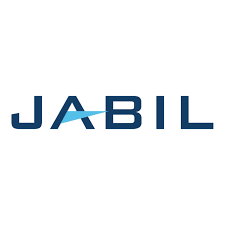

Especialista en soporte técnico, redes y desarrollo de software con experiencia
en mantenimiento de sistemas, gestión de tickets y resolución de problemas TI.
Gestión de ITSM: Administración y resolución de
incidencias a través de la plataforma GLPI, optimizando los tiempos de respuesta para el usuario
final.
Infraestructura y SITE: Supervisión directa del
SITE, garantizando la disponibilidad de los servicios de red y servidores.
Gestión de Proveedores: Coordinación con terceros
para el desarrollo de proyectos tecnológicos y adquisición de insumos técnicos.
Ciclo de Vida de Activos: Control administrativo
de inventarios TI, gestionando desde la implementación de equipos nuevos hasta la baja de
activos obsoletos.
Soporte Multi-Sede: Despliegue de asistencia
técnica presencial y remota a nivel regional, cubriendo necesidades críticas fuera de la plaza
principal en la planta de compresión de gas en el salto jalisco.
Soporte Técnico Integral: Ejecución de programas
de mantenimiento preventivo para prolongar la vida útil del hardware y optimizar el rendimiento
del software en equipos de cómputo y periféricos.
Resolución de Incidencias (Soporte Correctivo):
Diagnóstico y reparación de fallas críticas en estaciones de trabajo, asegurando la mínima
interrupción de las actividades de los usuarios mediante intervenciones técnicas oportunas.
Gestión de Presencia Web y Landing Pages:
• Administración de CMS (WordPress): Gestión y mantenimiento de sitios web
mediante la plataforma WordPress, asegurando la actualización constante de contenidos y la
estabilidad del sitio.
• Desarrollo de Landing Pages: Diseño y configuración de páginas de aterrizaje
enfocadas en la conversión, aplicando principios de diseño web funcional y estructurado.

Jabil
Soporte Técnico
Gestión de ITSM: Administración eficiente de flujo
de trabajo basado en tickets mediante ServiceNow, priorizando la atención de fallas críticas en
el edificio y líneas de producción.
Infraestructura y Conectividad: Configuración y
habilitación de nodos de red (puertos) y periféricos esenciales para la operación, como
impresoras corporativas e industriales.
Mantenimiento de Activos: Ejecución de planes de
mantenimiento preventivo y correctivo para estaciones de trabajo de nueva generación y equipos
heredados (legacy), extendiendo su ciclo de vida útil.
Gestión de Software Especializado: Administración
y soporte en la plataforma Loftware para el desarrollo y despliegue de etiquetas de producto,
asegurando la precisión en la identificación de mercancía para clientes finales.
Control de Proveedores: Coordinación y supervisión
de servicios externos, incluyendo la generación de reportes detallados de cumplimiento y
bitácoras de visita.
Educación
Instituto FiTech
Ingeniería de Software
2023 – Actual (A un año de concluir)
Cursos Destacados
Técnico en reparación de laptops en Edutin
Seguridad informática en Hacker Garaje
Mantenimiento y Reparación de Computadores en Edutin
Habilidades Técnicas
Soporte Técnico
Mantenimiento de PC y Laptops
Respaldo y recuperación de archivos
Administración de Directorio Activo
Instalación de S.O. y Software
Soporte remoto
Manejo de Office 365
Programación & Web
C#
Java
Python
HTML & CSS
WordPress
Redes
Configuración de Routers, APs, Switches
Reparación de cableado y puertos
Diagnóstico y solución de caídas de Internet
Habilidades Profesionales
Competencias Clave
Trabajo en equipo y colaboración
Resolución de problemas
Comunicación efectiva
Atención al cliente y empatía
Gestión del tiempo y priorización
Adaptabilidad y aprendizaje continuo
Competencias Profecionales
Gestión de proyectos.
Resolver incidencias técnicas.
Coordinación con proveedores.
Dar mantenimiento preventivo y correctivo a equipos y sistemas.
Respaldar información y cuidar la seguridad de los datos.